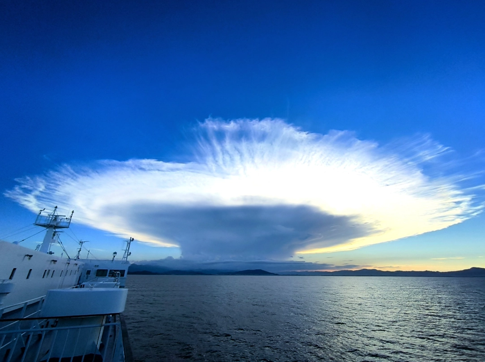

푸른 하늘을 뒤덮은 ‘거대한 구름’이 일본 열도를 놀라게 했다. 최근 일본 일부 지역에서 관측된 이 특이한 구름은 강한 뇌우의 신호일 수 있어 주의가 필요하다.
23일 엑스(X) 등 일본 소셜미디어(SNS)상에서는 최근 ‘모루구름’을 발견했다는 글과 인증사진이 잇따라 올라왔다.
현지 누리꾼들은 “오늘도 거대한 모루구름이 출현했다”, “모루구름을 발견했다”, “모루구름이 접근 중이다”라는 글과 함께 모루구름을 목격 소식을 발 빠르게 전했다.
모루구름이 발견된 곳은 시코쿠 지방, 간토 지방 등 다양하다.
현지 언론 TBS 방송 역시 제보 사진과 함께 “시코쿠 지방에서 모루구름이 목격됐다”며 “위성 사진에서도 가가와현과 도쿠시마현에 걸쳐 있는 커다란 구름이 포착됐다”고 전날 보도했다.